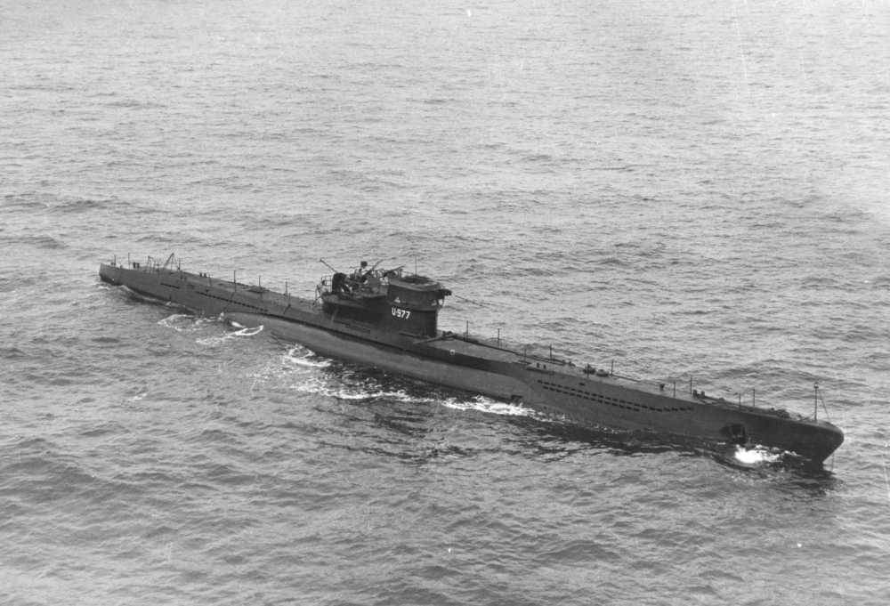

Around 1958, eleven year old Billy Barron was holidaying on the Massachusetts coast with his family. While exploring the sea rocks with his friend Susie, they reportedly discovered a sinister treasure that led to Billy's parents calling the police. Decades later, the local police have no records of the event and the incident remains an unconfirmed mystery, but open source sleuthing offers us a tantalizing potential clue. Close to the site of this discovery is a building with ties to an overseas government… What is the address of this foreign government building (omit 'road, 'avenue', 'street', etc)?
